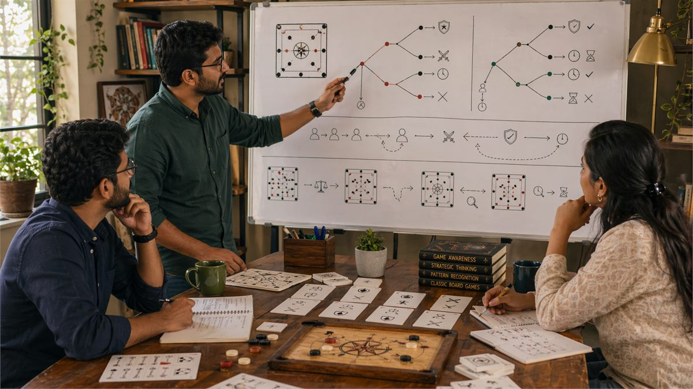
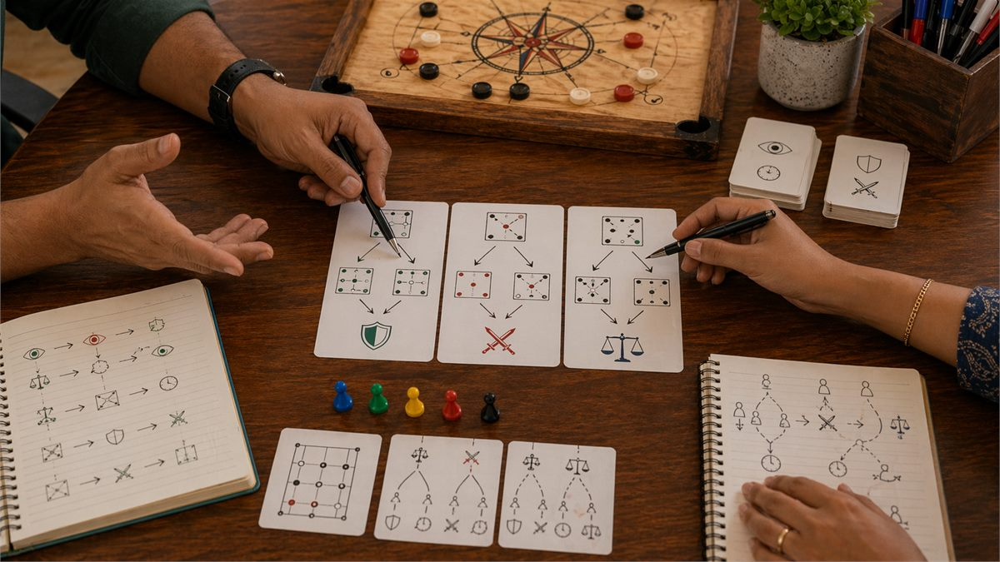

Introduction
Every meaningful decision in games involves some combination of risk and reward, and understanding how to balance these elements is fundamental to strategic success. Risk balance is not about avoiding risk but about taking calculated risks that offer appropriate compensation and avoiding risks that do not justify their potential downside.
In Indian games, risk balance manifests in situations ranging from whether to continue in a hand to how aggressively to play a strong position. Getting this balance right produces better long-term results than either reckless risk-taking or excessive caution that sacrifices profitable opportunities.
This guide explores the concept of risk balance, practical techniques for evaluating risk and reward, common errors that lead to poor risk decisions, and methods for developing better risk calibration over time.
Overview

What Is Risk Balance?
Risk balance is the strategic approach that takes risks proportional to their expected value while avoiding risks that do not justify their potential downside. It involves evaluating both the probability and magnitude of potential gains and losses and comparing those to alternatives that might offer better risk-adjusted returns.
Risk balance does not mean treating all risks as equal. Some risks are worth taking because they offer sufficient upside relative to their probability. Other risks are not worth taking because they expose you to disproportionate downside relative to potential gains. The key skill is distinguishing between these situations.
The concept also involves recognizing when your current position allows you to take risks versus when you cannot afford to take risks. A strong position might allow aggressive risk-taking that would be disastrous from a weak position. Understanding your current standing relative to opponents helps calibrate appropriate risk levels.
Developing risk balance means building intuition for which risks are worth taking and which should be avoided, while maintaining enough flexibility to adjust based on specific game conditions rather than applying rigid rules mechanically.
1. Understanding Risk and Reward
Effective risk balance requires clear understanding of what risk and reward actually mean in game contexts. Risk is the possibility of a negative outcome. Reward is the possibility of a positive outcome. Both are probabilistic rather than certain.
Risk assessment involves estimating the probability and magnitude of potential negative outcomes. A play might lose a small amount most of the time but occasionally lose a large amount. Understanding both the frequency and size of losses matters for accurate risk assessment.
Reward assessment involves estimating the probability and magnitude of potential positive outcomes. A play might win a small amount most of the time but occasionally win a large amount. The overall expected value depends on both sides of the outcome distribution.
Risk-reward comparison involves comparing the risk profile of different options to identify which offer the best risk-adjusted returns. A higher potential reward might justify taking on more risk, while a lower reward might not justify even modest risk.
2. Expected Value and Risk Adjustment
Expected value provides the mathematical framework for comparing risky options, combining probability and outcome magnitude into a single comparison metric. Understanding expected value is essential for making risk-balanced decisions.
Calculating expected value involves multiplying each possible outcome by its probability and summing these products. The result represents the average outcome you would expect over many repetitions of the same decision.
Risk-adjusted expected value accounts for the shape of the outcome distribution, not just its average. Two options with the same expected value might have very different risk profiles, with one producing mostly near-average outcomes while the other produces extreme outcomes in both directions.
Kelly criterion and similar approaches provide formulas for sizing risky bets optimally based on edge and odds. These approaches are most relevant for situations with repeated exposure to similar risks rather than one-time decisions.
Practical expected value thinking means estimating probabilities and outcomes intuitively rather than calculating precisely, then comparing expected values across options to identify which offers the best risk-adjusted return.
3. Position-Based Risk Calibration
Your current game position significantly affects appropriate risk levels. From strong positions, you can take risks that would be inappropriate from weak positions. Understanding this context-dependence is essential for balanced risk-taking.
Strong position risk tolerance means being able to take on riskier options when you have buffer against potential losses. If you are winning significantly, you can afford to take risks that might not pay off because your cushion protects you from catastrophic outcomes.
Weak position risk tolerance means being more conservative when you cannot absorb losses. If you are already losing, further losses might eliminate your chance to recover, making risk-taking more costly than it would be from a stronger position.
Position-based risk calibration requires honest assessment of your current standing relative to opponents and to the goals of the game. Overestimating your position leads to taking risks you cannot afford. Underestimating your position leads to missing profitable opportunities.
Dynamic position assessment means recognizing that position changes as games progress. What was appropriate risk tolerance at one moment might become inappropriate as situation evolves, requiring ongoing recalibration.
4. Opponent Risk Profiles and Exploitation
Understanding how opponents approach risk allows you to exploit their tendencies and adjust your risk profile to maximize advantage. Different opponents have different risk preferences, and these differences reveal exploitable patterns.
Risk-seeking opponents often overvalue upside and undervalue downside, making them willing to take poor risks that offer excitement but negative expected value. Against these opponents, avoiding risky situations they create is often optimal.
Risk-averse opponents often overvalue downside and undervalue upside, making them fold or check in situations where they should be aggressive. Against these opponents, applying pressure works because they will yield rather than fight.
Risk-balanced opponents recognize appropriate risk levels and adjust their play accordingly. These opponents are harder to exploit through risk-based strategies and require more nuanced approaches.
Exploiting risk profiles means adjusting your play to take advantage of opponent tendencies. If an opponent will fold to aggression too often, becoming more aggressive extracts value. If an opponent takes reckless risks, letting them do so while avoiding participation in their risky plays often wins.

5. Common Risk Decision Errors
Several systematic errors lead to poor risk decisions. Recognizing these errors helps you avoid them in your own game and exploit them in opponents.
Loss aversion causes players to avoid risks that would actually improve their position because they focus on avoiding losses more than pursuing gains. This leads to excessive conservatism that sacrifices profitable opportunities.
Recency bias causes players to overweight recent outcomes when evaluating risk decisions. A recent loss makes risks seem larger than they actually are. A recent win makes risks seem smaller. This distortion leads to inconsistent risk calibration.
Overconfidence causes players to underestimate risks and take positions they cannot afford. When things go well, it is easy to believe they will continue to go well, leading to progressively riskier decisions.
Result orientation causes players to judge risk decisions by outcomes rather than by decision quality at the time. A risky play that succeeds was not necessarily a good risk. A conservative play that fails was not necessarily a bad risk. Judging by process rather than outcome is essential for accurate risk calibration.
6. Risk Management Techniques
Practical techniques for managing risk help maintain appropriate risk levels even when emotional pressure makes balanced decision-making difficult.
Bankroll management involves sizing risks relative to your total resources so that any single loss cannot eliminate your ability to continue. This protection allows you to take appropriate risks without fear of catastrophic consequences.
Position sizing involves adjusting how much you risk in each situation based on confidence, position, and game state. Risking more when conditions favor you and less when they do not maintains better risk balance across games.
Hedging strategies involve taking offsetting positions that reduce risk while sacrificing some potential upside. This approach trades pure expected value for reduced variance, which might be appropriate when variance itself is costly.
Risk limits involve pre-committing to maximum risk levels in specific situations, which prevents emotional escalation from causing excessive risk-taking. When you decide in advance that you will not risk more than X in this situation, you remove emotional pressure from the actual decision.
7. Building Risk Intuition
Deliberate practice in risk decisions builds intuition that makes balanced risk-taking more automatic. This intuition allows fast risk assessment without requiring explicit calculation.
Practice environments involve taking risks in low-stakes situations where mistakes are not costly, allowing you to develop feel for different risk profiles without severe consequences for errors.
Feedback integration involves analyzing your risk decisions after games, understanding what you got right and wrong, and adjusting your risk calibration based on this feedback. Patterns in your risk errors reveal where to focus improvement.
Risk journal involves documenting your reasoning in significant risk decisions and reviewing these entries over time to identify systematic tendencies in your risk approach. Patterns that are invisible in individual decisions become clear when viewed across many decisions.
Comparative analysis involves studying how other players approach risk decisions and comparing their approaches and results to your own. This external perspective reveals options and considerations you might have missed.
8. Risk Balance Across Game Phases
Risk tolerance appropriately shifts across different phases of games. Understanding how and why to shift risk profiles helps maintain optimal balance throughout game progression.
Early phase risk often involves building position and gathering information rather than taking aggressive risks. Conservative play preserves resources for later phases when more information is available.
Mid phase risk often involves taking calculated positions based on accumulated information. More knowledge allows more confident risk-taking, but uncertainty remains significant enough to warrant balanced rather than reckless approaches.
Late phase risk often involves high-stakes decisions where outcomes are determined. Risk tolerance often increases as games near conclusion because the opportunity to recover from losses diminishes.
Transitional phase awareness involves recognizing when phases change and adjusting risk profiles accordingly. Missing phase transitions leads to using inappropriate risk approaches for current conditions.
Common Mistakes
- **Taking risks that do not offer sufficient expected value**: Not all risks are worth taking. Only risks with positive expected value should be considered, and among positive EV risks, higher EVs are generally preferable.
- **Failing to consider position when evaluating risk tolerance**: Risk tolerance should depend on your current standing. Risks that are appropriate from strong positions may be disastrous from weak positions.
- **Letting emotional reactions to recent results distort risk assessment**: Recency bias causes recent wins to make risks seem smaller and recent losses to make risks seem larger. Actively countering this bias maintains accurate calibration.
- **Taking on asymmetric downside risks where upside does not justify downside**: Some risks offer modest upside but catastrophic downside. These should be avoided even when upside appears attractive.
- **Ignoring opponent risk profiles when making decisions**: Opponent tendencies affect whether specific risks are profitable. Risks that would be positive against one opponent might be negative against another.
- **Failing to update risk assessment as situation evolves**: Risk assessment is not a one-time decision. As games develop, risk profiles change and current assessments might no longer apply.
Summary
Risk balance involves taking calculated risks that offer appropriate expected value while avoiding risks that do not justify their potential downside. Understanding risk-reward relationships, calibrating based on position, exploiting opponent risk profiles, and avoiding systematic errors all contribute to better risk decisions. Building risk intuition through deliberate practice and feedback integration makes balanced risk-taking more automatic over time.